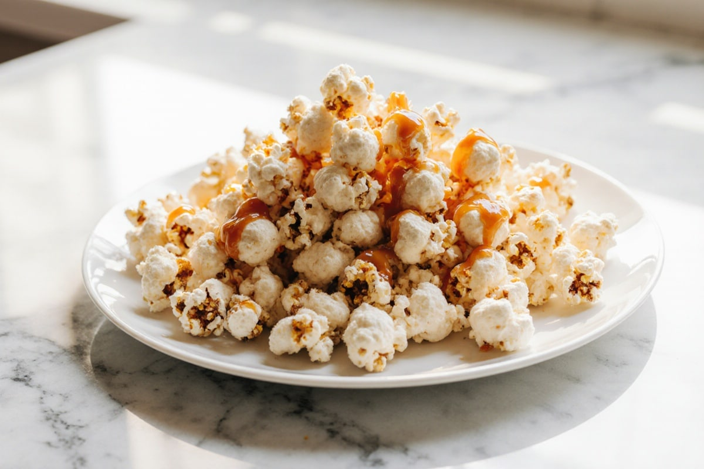

Did you know? Popcorn is also known as:
The only reason I still go to cinemas is so that I can eat popcorn. It is the best snack anyone has invented, especially if it's freshly made caramel popcorn.
Where best to eat popcorn:
If you've never made popcorn before, here's how I'd preferably make them:
I started wondering halfway through this if Gordon Ramsay has a popcorn recipe. Spoiler: He does.
If you've gone this far without knowing what popcorn looks like, don't worry, I've got a really good image for you:

My personal popcorn ranking:
| Popcorn Flavour Type | Rating | Thoughts |
| Classic caramel | 10/10 | I could eat this all day |
| Basic popcorn | 6/10 | I'd be sad after a few munches | Unpopped kernel | 0/10 | Not quite sure why anyone would eat this |